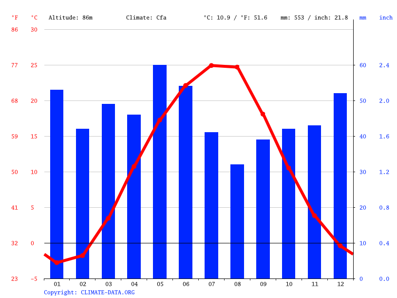
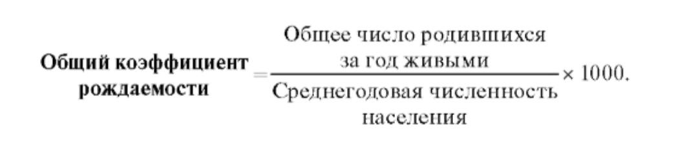
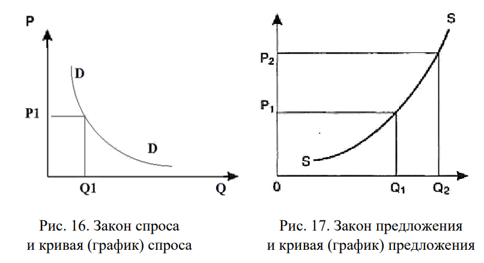
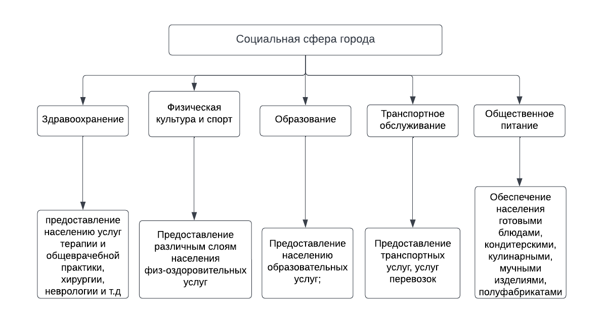

Новочеркасск
Оффициальный сайт города


Меню
Ru
Ru
| Географическое положение | |||
| Положение в смысле математической географии | Физико-географическое | Политико-географическое | Экономико-географическое |
| Компоненты | |||
| 47,421 северной широты | ... | ... | ... |
| 40,0919 восточной долготы | ... | ... | ... |
| 89 метров над уровнем моря | ... | ... | ... |
| Покомпонентные разновидности географического положения города | Особенности географического положения города |
| Административно-географическое положение (город как административно-территориальный центр территории его расположения) | ... |
| Историко-географическое положение (город как место наиболее важных исторических событий, происходящих на территории его расположения в прошлом и современности) | ... |
| Природно-географическое положение (местонахождение города по отношению к крупным природным объектам – горам, равнинам, рекам, озерам, морям, океанам, материкам) | ... |
| Ресурсно-географическое положение (расположение города по отношению к крупным месторождениям и бассейнам полезных ископаемых, водным объектам, энергетическим базам, лесным массивам) | ... |
| Демогеографическое положение (расположение города по отношению к крупным скоплениям населения – другим городам, густозаселенным районам, регионам с высокой или низкой численностью населения и обеспеченность города трудовыми ресурсами) | ... |
| Агрогеографическое положение (положение по отношению к главным источникам продовольствия и сельскохозяйственного сырья для обеспечения населения города продуктами питания) | ... |
| Транспортно-географическое положение (положение города по отношению к крупным транспортным магистралям – автомобильным дорогам, железнодорожным магистралям, речным системам, речным и морским портам, аэропортам, транспортным узлам) | ... |
| Рекреационно-географическое положение (по отношению к главным районам рекреации и туризма) | ... |
| Эколого-географическое положение (положение города по отношению к крупным источникам загрязнения окружающей среды и опасным природным и техногенным явлениям) | ... |
При построении новых жилых комплексов, на окраинах города Новочеркасска, на наш взгляд, могут появиться новые районы в связи с положительной миграцией населения в город.
1. Новочеркасск расположен на возвышенности, но окружающие его населенные пункты расположены на равнине. Это положительно влияет на развитие сельскохозяйственной деятельности и скотоводства, позволяя развивать аграрную промышленности
2.Климатограмма (климатическая диаграмма) – это специальное графическое изображение, в котором отражают одновременно годовой ход температуры воздуха и количество осадков по месяцам в течение года. По климатограмме можно определить температуру воздуха и количество осадков в каждый месяц года, рассчитать амплитуду колебания температур, годовое количество осадков, проанализировать режим выпадения осадков, установить тип климатического пояса, в котором располагается город.
Для построения климатограммы используют систему координат, в которой по оси абсцисс (ось Х) – отмечают месяцы года буквами (я – январь, ф – февраль, м – март и т. д.) или римскими цифрами (январь – I, февраль – II и т. д.). По оси ординат (ось Y) слева показывают шкалу температур (°С), а справа – шкалу осадков (мм). По имеющимся данным значения температуры показывают линией графика, а количество осадков – столбцами диаграммы. Средние многолетние данные о температуре воздуха и количестве осадков по месяцам года для построения климатограммы изучаемого вами города найдите в информационной сети Интернет.
Наинизшая влажность воздуха (до 55%) бывает в июле и августе, наивысшая (до 85%) — в осенние и зимние месяцы. Среднегодовое количество осадков в Новочеркасске — 616 мм; наибольшее количество осадков (до 65 мм) выпадает в январе, июне и в декабре; в мае — лишь 45 мм, в сентябре — 35 мм. Ветры преобладают широтного направления: восточных румбов в январе — 57%, в июле — 38%, западных румбов в январе — 35%, в июле — 46%.
3. Единственным водоемом вблизи Новочеркасска является река Тузлов, которая берет начало на южном склоне Донецкого кряжа на территории Луганской области, и имеет длину 182 километра. Питание реки в основном снеговое, половодье происходит в марте-апреле, летом в верховых местах пересыхает. Реку загрязняет Новочеркасская ГРЭС, для решения этой проблемы, по нашему мнению, можно использовать очистные сооружения.
4. Застройка города никоим образом не повлияла на рельеф окружающих его местностей. Самой загрязненной отраслью является энергетическая, она пагубно влияет на экосистему Новочеркасска и окружающих его населенных пунктов.
1.В 2014 году количество населения было наиболее высоким, а после был большой спад, который продлился до 2020 года. Обосновать данный спад можно тем, что люди, получившие высшее образование, уезжали из города в поисках лучшей работы.
За 2010 - 2020 г. рост населения составил 0.17%.| 2010 | ↘168 746 |
| 2011 | ↗169 277 |
| 2012 | ↘169 032 |
| 2013 | ↗173 140 |
| 2014 | ↘172 817 |
| 2015 | ↘170 233 |
| 2016 | ↘170 233 |
| 2017 | ↘168 766 |
| 2018 | ↘168 022 |
| 2019 | ↘167 355 |
| 2020 | ↗168 035 |
2) 1) абсолютные показатели:
количество прибывших на постоянное место жительство за год (П);
· количество выбывших на постоянное место жительство в другие города за год (В);
· валовая миграция (ВМ):
· механический прирост (МП):
· коэффициент прибытия
· коэффициент выбытия
· коэффициент механического прироста населения
· коэффициент общего прироста
2) относительные показатели:● коэффициент рождаемости
● коэффициент смертности
● коэффициент детской смертности
● коэффициент заключения браков
● коэффициент зарегистрированных разводов
● коэффициент естественного прироста населения
● коэффициент жизненности населения (коэффициент Покровского)
3)– общий коэффициент рождаемости:Демография (от греч. demos - народ и grapho - писать) - наука о населении, закономерностях его воспроизводства в связи с социально-экономическими и историческими условиями.
Общий показатель рождаемости (рождаемость) представляет собой общее число родившихся живыми в течение года, приходящееся на 1000 населения, и рассчитывается по формуле.
Естественный прирост населения может быть выражен в абсолютных числах как разность между числом родившихся и умерших в данном году, но чаще он рассчитывается как показатель естественного прироста, определяемый разностью между показателями рождаемости и общей смертности.
𝐾𝑁 = 𝑁𝑆 100; – общий коэффициент смертности:𝐾𝑀 = 𝑀
𝑆 100; – коэффициент естественного прироста:
𝐾𝑁−𝑀 = 𝑁 − 𝑀𝑆 100,

4)1-й тип воспроизводства населения. Еще его называют «современным типом воспроизводства населения».
Для него характерны низкая рождаемость, низкая или средняя смертность, нулевой или отрицательный природный прирост. Наиболее распространен в Европе.
2-й тип воспроизводства населения. Его еще называют «традиционным типом воспроизводства населения».
Для него характерны высокая рождаемость, высокий уровень смертности, высокий природный прирост.
Наиболее распространен в странах третьего мира
3.Воспроизводство населения — постоянное возобновление численности и структуры населения в ходе смены поколений людей на основе рождаемости и смертности, а также миграции. Совокупность параметров, определяющих этот процесс, называется режимом воспроизводства населения. Воспроизводство также называют естественным движением населения потому что поколения меняются, иначе говоря “движутся”, и это движение постоянно. Существует три типа воспроизводства населения:1. Традиционный- Применим к странам, преимущественно занятым в сельском хозяйстве. Характерна высокая рождаемость, но также и высокая смертность в силу слабого развития медицины. Среднее количество детей в семье:7-8.
2. Нулевой:Характерен для индустриального общества, основным условием является то, что смертность равна рождаемости. Происходит в условиях среднего развития медицины. Среднее количество детей в семье:2-3.
3. Современный: Применим к развитым странам в наше время, рождаемость низкая, но смертность среди детей почти нулевая в силу высокого уровня развития медицины.В основном семьи планируют количество детей, исходя из материального положения и жилищных условий. Среднее количество детей в семье:1-2.
4. Статистические данные об общих коэффициентах рождаемости и смертности города Новочеркасска за 7 лет (2015-2021)| год | умерло | родилось | прибыль/убыль |
| 2021 | 2135 ч | 1429 ч | -706 |
| 2020 | 2569 ч | 1459 ч | -1110 |
| 2019 | 2234 ч | 1510 ч | -724 |
| 2018 | 2264 ч | 1644 ч | -620 |
| 2017 | 2257 ч | 1743 ч | -514 |
| 2016 | 2346 ч | 1969 ч | -377 |
| 2015 | 2350 ч | 2045 ч | -305 |
| Градообразующие отрасли | Градообслуживающие отрасли |
| Химическая промышленность (Энергопром НЭЗ) | Центр социальной помощи населению (Новочеркасский городской центр занятости населения) |
| Машиностроение (НЭВЗ) | Государственная общественная структура (Совет директоров города Новочеркасск) |
| Энергетическая промышленность (ГРЭС) =)))) | Негосударственная, некоммерческая общественная организация (Торгово-промышленная палата) |
Используя статистические данные и материалы средств массовой информации, информацию официальных сайтов администраций изучаемого вами города, установите отрасли специализации его 30 промышленности. Укажите названия предприятий (фирм), которыми они представлены. Дайте характеристику спектра выпускаемой ими продукции. Определите и проанализируйте факторы, способствующие их размещению и развитию в городе. Для ответа используйте табличную форму представления информации
| Отрасль специализации | Ведущие предприятия, представляющие отрасль | Виды выпускаемой продукции | Факторы размещения и развития отрасли |
| жилищно-коммунальные | МУП "Горводоканал" МУП "Тепловые сети" ООО фирма «ТОК» Филиал ООО "Сириус" в городе Новочеркасске |
водообеспечение, теплообеспечение, электрообеспечение, газообеспечение | В 2018 году проходил Капитальный ремонт многоквартирных домов. Общий процент износа объектов электроэнергетики филиала ОАО «Донэнерго» – «НМЭС» по г. Новочеркасску составляет 45,78%. Для снижения потерь в сетях на объектах энергетики в 2009-2010 годах выполнены работы по реконструкции и капитальному ремонту. Экономияэлектроэнергии по этим объектам составила 3769 тыс. кВт∙ч в год. |
| транспорт | Деловые Линии Энергия ПЭК Выбор-ИнТранс Новочеркасск Спарта |
транспортные услуги, услуги перевозок | Обновление парка собственной техникой активно используя в этом процессе собственные средства учредителей, кредитные инструменты и коммерческий лизинг. Замена устаревшей техники на более современные автобусы отечественного производства, работающие на газомоторном топливе. Продолжается собственная подготовка профессиональных водителей для нужд предприятия. Предприятие заинтересовано в том, чтобы готовить не менее 20-30 человек за один поток обучения. |
| связь | МТС
Предприятия и отделения связи Билайн Предприятия и отделения связи МегаФон Предприятия и отделения связи Yota Предприятия и отделения связи |
услуги связи, электрическая связь, радийное и телевизионное вещание, телефонная и наземная связь и т.д. | Развитие средств связи ,расширяет возможности коммуникации, быстрый и удобный способ передачи информации независимо от расстояния получает распространение , по прямой необходимости. |
| бытовые услуги | Ателье Силует Баня Вавилон Парикмахерская 20 Авеню Прокат автомобилей ЮгАвто Ремонт бытовых машин и приборов Заря Ремонт и техническое обслуживание транспортных средств Гарант ТехпромАльянс Химчистка мебели и ковролина Фотостудия GO |
услуги ателье, услуги бани и душей, услуги парикмахерских, услуги проката, услуги ремонта бытовых машин и приборов, услуги ремонта и техническое обслуживание транспортных средств, строительство и ремонт жилищ (квартир), химчистка, прачечная, дорожно-строительное предприятие, производство мебели, поставка стройматериалов, фотостудия и т.д. | Появление новых объектов, оказывающих бытовые услуги, создает конкурентность в этой сфере, что позволяет повысить качество работы, и повысить уровень жизни и удовлетворенности населения в целом. |
| здравоохранение | МБУЗ «Городское патолого-анатомическое бюро, МБУЗ «Стоматологическая поликлиника № 2», МБУЗ «Специализированная инфекционная больница» г. Новочеркасска, МБУЗ «Родильный дом», МБУЗ «Детская городская больница», МБУЗ «Городская больница скорой медицинской помощи» | услуги терапии и общеврачебной практики, хирургия, ревматология, инфекционные болезни, неврология и т.д. | После столкновения с эпидемической угрозой (COVID-19), была проведена приоритизация расходов областного бюджета, выделены те направления финансирования, которые должны быть исполнены в первую очередь.Здравоохранение города Новочеркасска включено в реализацию 6 региональных направлений национального проекта «Здравоохранение». Сроки их реализации – с 1 января 2019 года по 31 декабря 2024. |
| общественное питание | Ресторан Губерния, Ресторан Сицилия, Кофейня YourTime кофе & вафли, Кофейня Карамель, Кофейня Palermo, Предприятие быстрого обслуживания KFC, | Готовые блюда; кондитерские кулинарные, мучные изделия; полуфабрикаты | Рост ВРП на душу населения, увеличение доли населения молодежи, постоянно улучшение качества продукции предприятий общественного питания. |
| спорт | Фитнес клуб СпортСити, Арбат Фитнес, Силуэт, Ледовый дворец | физкультурно-оздоровительные услуги | Ежегодно проводятся городские Спартакиады:- общеобразовательных школ по 12 видам спорта; - средних специальных учебных заведений ССУЗов по 9 видам; - Спартакиада Дона по 19 видам спорта. Победители Спартакиад принимают участие в областных соревнованиях. В трудовых коллективах города физической культурой и спортом в течение года регулярно занимаются около 4000 человек. Для занятий спортом в распоряжении работников ведущих предприятий города находится 42 спортсооружения, 3 физкультурно-оздоровительных центра. При Управлении по ФК и С работает творческая группа по пропаганде физической культуры и спорта в средствах массовой информации. В эфире радиостанции и телеканала «Донская столица» жителей города регулярно знакомят со спортивными новостями. В местных газетах еженедельно печатается информация о проведенных спортивных мероприятиях . |
| культура | Музей истории Донского казачества, Атаманский дворец, Дом-музей Крылова, Донской театр драмы и комедии имени В. Ф. Комиссаржевской, Библиотека им. М.А.Шолохова, Собор Вознесения Господня (Вознесенский собор), | посещение культурно-досуговых центров и других культурно-просветительных мероприятий | Культура развивается благодаря тем людям, которые ходят в музеи, атаманские дворцы и тем самым сохраняют культуру казачества в городе. Попытка сохранить название «столица донского казачества» очень хорошая, но, к сожалению, скорее всего будет провалена потому что большинство людей не изучают культуру, традиции своего родного города. |
| образование | НПИ (Новочеркасский Политехнический Институт), НИМИ (Новочеркасский инженерно-мелиоративный институт) | образовательные услуги | Реализация региональных проектов Доп. Обр.: Открытие новых учреждений (например: технопарк "Кванториум") |
2019, 2020, 2021 2020-2021
- 701 предприятия стационарной торговой сети (темп роста 102,9%);
- 659 предприятий мелкорозничной торговой сети (темп роста 100,9%);
- 91 аптек и аптечных пунктов (темп роста 102,2%);
- 20 автомобильных заправочных станций (темп роста 100%);
- 2 розничных рынков (темп роста 100%).
Уменьшение предприятий потребительского рынка, произошло из-за введения на территории Ростовской области ограничительных мер по обеспечению санитарно-эпидемиологического благополучия населения в связи с распространением новой коронавирусной инфекции (COVID-19).
Количество предприятий быстрого питания, в том числе в торговых центрах, объектах крупноформатной сети составило 32 единицы, что составляет 16,8% от общего количества предприятий общественного питания, 6 сетевых предприятий, в том числе 4 предприятия областного уровня, осуществляющих деятельность в 10 объектах и 2 предприятия федерального уровня.
На территории города на 01.01.2021 года функционирует 2 рынка, имеющих разрешение на право организации розничных рынков. Количество рынков на 01.01.2021 по сравнению с периодом на 01.01.2020 осталось на прежнем уровне.
Постановлением Администрации города от 06.12.2019 № 1746 в "Перечень мест организации ярмарок на территории муниципального образования "Город Новочеркасск" на 2020 год" (в редакции от 26.08.2020 №1100) включено 16 площадок, использовано для проведения ярмарочных мероприятий в 2020 году - 14 площадок, проведено – 16 ярмарочных мероприятий. Организовано 366 торговых мест на 11 постоянно действующих универсальных ярмарках. В 2020 году проведено 3 ярмарочных мероприятия с предоставлением мест на бесплатной основе. Уменьшение количества ярмарок произошло из-за ограничительных мероприятий, введенных на территории Ростовской области в связи распространением коронавирусной инфекции (COVID-19).
- Потребность - внутреннее состояние психологического или функционального ощущения недостаточности чего-либо
- Благо - всё, что способно удовлетворить потребности людей, приносить пользу, доставлять удовольствие Блага бывают свободными и экономическими Экономические блага - это те, что человеку предлагает человек(товары и услуги), а природные блага человек получает от природы(воздух, солнечный свет)
- Товар - любая вещь, которая участвует в свободном обмене на другие вещи; продукт, произведенный для продажи
- Товары-субституты - это взаимозаменяемые товары, которые направлены на удовлетворение одних и тех же потребностей Из пищевых продуктов в качестве примера можно привести мандарины и апельсины, кофе и чай. Среди сырьевой продукции и топливных ресурсов взаимными заменителями являются соответственно пластмасса и металл, газ и каменный уголь.
- Существуют потребности в товаре Свойства товара таковы, что товар может удовлетворить эти потребности
- Товар это особая разновидность продуктов. Продукт становится товаром, когда объявляют, что его собираются продавать
- Комплементарными товарами считаются товары дополняющие друг друга и которые "друг без друга не могут жить". Примеры комплиментарных товаров: машина (транспортное средство) - бензин, компьютер - монитор.
2. Факторы спроса
На спрос влияет множество факторов (детерминант). Все факторы условно делят на два вида: ценовые и неценовые. Ценовой фактор – это цена на данный товар. Ценовой фактор, хоть и не является единственным фактором, оказывающем влияние на выбор потребителей, но является самым существенным.
Среди неценовых факторов (детерминантов), которые оказывают воздействие на поведение покупателей особенно выделяют:● использование маркетинга;
● моду;
● экономическую политику государства;
● величину доходов потребителей;
● ожидания потребителей;
● уровень полезности товаров и услуг;
● уровень доступности товаров;
● цены на взаимозаменяемые (сопряженные) товары;
● количество и структуру населения.
Закон спроса: если цены на какой-либо товар или услугу увеличиваются, при том, что все прочие параметры остаются неизменными, спрос будет уменьшаться. Закон спроса имеет теоретическое обоснование. Его функционирование объясняется действием трёх механизмов: эффекта дохода, эффекта замещения и закона убывающей предельной полезности.
1. Эффект дохода: рост цен снижает покупательную способность потребителей, тем самым сокращая их реальный доход, что приводит к сокращению величины спроса на подорожавший товар.
2. Эффект замещения: рост цен побуждает потребителей заменить подорожавший товар более дешевым аналогом, что также приводит к сокращению величины спроса на данный товар.
3. Закон убывающей предельной полезности: по мере потребления, товар будет всё больше «приедается» – приносить всё меньше удовлетворение, из-за чего потребитель будет продолжать покупать товар в таких же количествах, только при снижении его цены.
2) Предложение – это способность и готовность продавцов продать товар или услугу по данной цене. Величина предложения (объем предложения) – это количественное выражение предложения. Факторы предложения
На предложение, также как и на спрос, влияет два вида факторов – ценовые и неценовые. Несмотря на то, что ценовые факторы и для спроса и для предложения одинаковы, их неценовые факторы довольно сильно отличаются. Неценовые факторы:● наличие товаров-заменителей;
● уровень развития технологий;
● антимонопольное законодательство;
● количество и доступность необходимых ресурсов;
● природные условия;
● налоговая политика государства;
● политические конфликты и войны;
● процентная ставка;
● уровень конкуренции в отрасли и др.
Ответы на вопросы:● При возрастании цены на товар спрос на него уменьшится, следовательно кривая спроса сместится влево.
● Если доходы населения возрастают, а цена на товар остается неизменной, спрос на товар увеличивается.
● При росте цены на товар предложение возрастет, значит кривая сместится влево.
● При удорожании сырья на производство товара его предложение на рынке уменьшится.
● Если цена на исходный товар увеличивается в два раза, то и спрос на товар-субститут увеличивается.
● Если возрастает цена на один из комплементарных товаров, то спрос на другой товар убывает.
3. Таблица потребностей среднестатической семьи в городе НовочеркасскеТовары, услуги Необходимое количество на месяц Цена за единицу товара, услуги, руб. Стоимость потребления, руб.
Продукты питания
Гречка 2 кг 73 73×2 = 146
Хлеб 4 буханки 55 220 Молоко 3 л 83 249 Масло 500 г 103 206 Яйца 30 штук 209 209 Огурцы 1 кг 150 150 Помидоры 1 кг 190 190 Мясо 3.5 кг 250 875 Картофель 2.5 кг 74 185 Яблоки 2 кг 80 160 Одежда, обувь, аксессуары Футболка для занятий спортом 1 шт. 500 500 Брюки 1 шт. 2999 2999 Кроссовки 1 шт. 1999 1999 Куртка 1 шт. 4999 4999 Рубашка 1 шт. 599 599 Нижнее бельё 3 шт. 199 600 Носки 3 шт. 99 300 Транспортные расходы Поездки в автобусе 56 поездок 26 1 456 Личный транспорт 75 литров 56 4200 Жилищно-коммунальные расходы Электроэнергия 170 кВт·ч 4,10 697 Холодное водоснабжение 27,74 м3 5,92 164 Горячее водоснабжение 18,98 м3 6,51 124 Газоснабжение 200 м3 6,51 1302 Бытовые услуги Ремонт обуви 1 1 000 1 000 Ремонт бытовой техники 1 от 500 р от 500 р Парикмахер 3 от 500 р от 1500 р Социально-культурные услуги Посещение кинотеатра 3 билета 300 ₽ 900 ₽ Дом-музей И.И.Крылова 3 билета 200 ₽ 600 ₽ Евроцирк 3 билета 500 ₽ 1500 ₽ ВСЕГО 28 529 4. Важной группой потребностей населения являются социальные потребности. Именно поэтому можно составить такую схему отраслей социальной сферы города Новочеркасска: Реальный капитал — это всегда комбинации капитальных благ, которые определенным образом сочетаются в режиме их использования в каждом определенном производственном процессе. Реальный капитал состоит из материальных объектов, а также объектов интеллектуальной собственности и прав на аренду. Реальный капитал сосредоточен в основном в реальном секторе, к которому принадлежат все виды экономической деятельности, кроме финансовой.
Финансовый капитал — это финансовые ресурсы, задействованные на предприятии в производственный оборот и приносящие доход от этого оборота. Капитал — это экономическая база создания и развития предприятия в материальных и нематериальных формах, инвестированных в формировании активов. Финансовый капитал (финансовые ресурсы, финансовые активы) – это капитал, представленный банковскими активами и находящимися в обороте ценными бумагами (деньги как капитал обычно хранятся в банках и поэтому входят в банковские активы).
Финансы – денежные отношения, возникающие между экономическими субъектами в процессе формирования, распределения и использования фондов денежных средств.
Капитал - экономический ресурс.
Деньги — это особый товар, который обменивается на все другие товары через который может быть оценена стоимость всех других товаров.
Классификация основных финансовых ресурсов: Традиционно финансы разделяют на публичные финансы (централизованные, государственные и муниципальные финансы) и частные финансы (децентрализованные). Последние включают в себя как корпоративные финансы (финансы организаций), так и финансы домохозяйств (личные и семейные финансы). Государственные финансы — это особая сфера экономических отношений, связанная с распределением, перераспределением и потреблением части общественного продукта в целях образования денежных фондов, необходимых государству для осуществления его функций: государственного управления, регулирования экономики, решения социальных проблем населения, поддержания обороноспособности страны, обслуживания государственного долга и т.п.
Корпоративные финансы — это финансы коммерческих организаций, ориентированных в первую очередь на получение прибыли от своей деятельности. Корпоративные финансы — это совокупность финансовых операций, осуществляемых предприятиями по привлечению финансовых ресурсов и их эффективному использованию, включая методы финансирования, осуществление инвестиционных проектов, управление ликвидностью, защиту от финансовых рисков и пр.
Общественные финансы — это финансы общественных организаций, например, благотворительных фондов, политических партий и подобных организаций. Доходы этих организаций формируются преимущественно за счет членских взносов, вкладов, пожертвований и т.п. Общественные организации не занимаются коммерческой деятельностью.
Частные финансы (финансы домохозяйств) — это совокупность отношений по поводу создания и использования фондов денежных средств и финансовых активов, необходимых для обеспечения жизнедеятельности членов домашнего хозяйства. В условиях рынка домашние хозяйства играют исключительно важную роль, так как они выполняют прежде всего функцию собственников средств производства, находящихся у них в частной собственности, а также предлагают свой труд за денежное вознаграждение.
Централизованные финансы – это подсистема финансовых отношений относительно формирования централизованных денежных фондов, которые сосредоточиваются в институтах государственных органов власти для выполнения государством своих функций.
Децентрализованные финансы включают в себя прочие (негосударственные) виды финансов, в частности финансы коммерческих организаций различных форм собственности, финансы общественных организаций и финансы частных лиц (домохозяйств).
В зависимости от отраслевой принадлежности компаний различают такие виды финансов: финансы промышленности;
сельского хозяйства;
строительства;
транспорта и связи;
сферы торговли:финансового сектора и т.п.
По организационно-правовым формам различают такие виды финансов:финансы акционерных обществ;
обществ с ограниченной ответственностью;
обществ с дополнительной ответственностью;
полных товариществ;
товариществ на вере;
производственных кооперативов;
частных предприятий;
государственных и муниципальных предприятий;
некоммерческих организаций и т.п.
В зависимости от размеров предприятий различают следующие виды финансов:финансы малых предприятий;
средних предприятий;
крупных предприятий.
Существует также классификация финансов в зависимости от форм собственности, в которой выделяют такие виды финансов:финансы государственных предприятий;
частных национальных компаний;
иностранных компаний;
совместных предприятий;
смешанных предприятий.
4. Таблица видов ценных бумаг и их основных свойств: Вид ценных бумаг Сущность, определение Особенности, признаки Форма получения (выплаты) дохода Акции Акция — это эмиссионная ценная бумага, доля владения компанией, закрепляющая права её владельца на получение части прибыли акционерного общества в виде дивидендов, на участие в управлении акционерным обществом и на часть имущества, остающегося после его ликвидации, пропорционально количеству акций, находящихся в собственности у владельца Все инвесторы, которые купили акции, стали совладельцами компании. Акция как раз и подтверждает, что у ее владельца есть доля в компании, пусть даже совсем маленькая. Держатель акции является совладельцем акционерного общества Облигации Облигации — это долговые ценные бумаги, которые выпускаются государством или компаниями, чтобы получить деньги на развитие бизнеса. Основные свойства облигаций: Наличие конечного срока действия облигации. Покупатель такого актива становится кредитором эмитента Векселя Вексель — это документарная ценная бумага , в которой в письменном виде закреплено обещание одной стороны выплатить другой стороне определенную сумму денег либо по требованию последней, либо в указанную дату. Отличительные особенности векселя заключаются в следующем: - Абстрактность векселя. То есть обязательства по векселю имеют только денежное выражение и напрямую никак не связаны с конкретными обязательствами векселедателя. - Возможность передачи сторонним третьим лицам без документального фиксирования такой операции; - Бесспорность векселя. То есть требования по векселю являются безусловными к исполнению и реализуются в полном объеме. - Солидарность векселя. То есть ответственность по векселю несут все лица, участвующие в исполнении и обороте векселя. - Документарность векселя. То есть вексель оформляется в виде бланка строгой отчетности в бумажной форме. - В случае неуплаты задолженности в предусмотренный срок не требуется никаких судебных разбирательств. В этом случае достаточно совершить нотариальный протест. Вексель может выдать как юридическое лицо, в том числе индивидуальный предприниматель, так и физическое лицо, достигшее возраста 18 лет. Погашение векселя — это платеж по нему в установленный срок. Банковские сертификаты (депозитные, сберегательные Банковский сертификат — один из видов ценных бумаг, который удостоверяет сумму внесенного вклада и права владельца на получение этой суммы и процентов по истечении установленного срока. Отличительная особенность сертификата- это единственный вид ценной бумаги, выпускать которую имеет право только коммерческий банк. Бумага, подтверждающая право владельца на банковский вклад и проценты по нему.С 1 января 2021 года для налоговых резидентов РФ ставка налога с суммы выигрышей за налоговый период до 5 000 000 рублей включительно составляет 13%. Итого: 1.740.000 рублей
Команда Направления инвестирования Срок инвестирования Возможный доход Особенности, специфика №1 (Садило, Рожкова) Приобретение жилья (квартиры) 3-4 года в среднем 3.250.000 рублей Покупаем квартиру на начальном этапе строительства, ждём, пока дом построят, и продаём дороже. В среднем в Новочеркасске 1 кв.м. в квартире на начальном этапе строительства стоит 60 тысяч рублей. В среднем студия квартира площадью в 25-28 кв.м обойдется нам в 1.500.000 - 1.680.000 рублей (29 кв.м. = 1.740.000) Затем продаём квартиру в стройварианте за 3.000.000 - 3.500.000, исходя из средней стоимости на рынке(?) №2 (Пуногин, Шатверян) Приобретение акций на электронной бирже 5 лет 1.150.000 рублей Вклад происходит в акции Газпрома, средняя дивидендная ставка составляет 10,5%, при этом риска потерять капитал нет, потому что 50% акций Газпрома принадлежит государству. Доход может варьироваться в зависимости от ситуации на бирже, но диапазон не является большим, потому что цена акции зависит от политической ситуации в мире. №3 (Аветисян, Бахматьянов) Инвестирование в дом 5 лет 2.500.000 рублей Изначально происходит покупка небольшого дома, далее производится его ежедневная сдача в аренду на праздники и другие события, далее дом продается и взимается соответствующая прибыль. №4 (Риккер, Паншин) Оплата обучения в вузе 4 года 30.992 руб. В месяц Обучение займёт время прежде чем вы будете получать доход. Обучение обойдется в 440.000 рублей. №5 (Мазуров Пасхалов) Открытие собственной фирмы 2 года 3.2 млн Прибыль 1.2 млн руб 50 тыс руб В месяц Знание характеристики продукции или услуг, исследование рынка; потребности в финансировании, сырье, оборудовании, персонале; финансовый планИнновация – это результат инвестирования интеллектуального решения в разработку и получение нового знания, ранее не применявшейся идеи по обновлению сфер жизни людей (технологии; изделия; организационные формы существования социума, такие как образование, управление, организация труда, обслуживание, наука, информатизация и т. д.) и последующий процесс внедрения (производства) этого, с фиксированным получением дополнительной ценности (прибыль, опережение, лидерство, приоритет, коренное улучшение, качественное превосходство, креативность, прогресс).
Инновацией является не всякое новшество или нововведение, а лишь такое, которое серьёзно повышает эффективность действующей системы.
Модельный закон про инновационную деятельность определяет, какими признаками должна обладать инновация:
● Новизна (то есть определенно отличаться от уже существующих продуктов и услуг);
● Обладать практической применимостью, полезностью и безопасностью для ее потребителя;
● Иметь конкурентоспособность.
Любая инновация, которая производит изменения в бизнесе и экономике, должна быть зарегистрирована. Примеры инноваций:
● Платить без наличных и карты.
Мобильные кошельки становятся все более и более популярны по всему миру. Виртуальный расчет поднялся на невиданную высоту – с помощью таких кошельков можно платить за все, начиная от доставки еду и заканчивая поездками на такси и бронированием жилья.
● Общаться с компьютером посредством речи или письменного текста.
Боты – простейший искусственный интеллект, способный отвечать на ваши вопросы или даже просто болтать с вами о всяких житейских вещах.
Большинство из нас ежедневно использует чат боты, просто мы не знаем об этом. Если вы хоть раз спрашивали Сири или Кортану о времени начала сериала по телевизору, вы общались с ботом, даже не подозревая об этом. Facebook недавно ввел собственный новостной бот, а компании вскоре обзаведутся чат ботами, способными общаться с клиентами.
Боты призваны облегчить жизнь людей, но нам есть еще что узнать об это технологии и ее использовании.
● Переживать что-либо, находясь совершенно в другом месте
Устройства виртуальной реальности – это больше, чем просто смешные очки. Изначально, они предназначались исключительно как игровой девайс, но вскоре им нашли другое более практическое применение. Благодаря очкам виртуальной реальности можно пережить виртуальный опыт, совершенно забыв о компьютере, шлеме и аксессуарах, и чувствуя себя так, как чувствовали бы в реальной жизни.
Три года назад никто не смог бы представить, что он находится на Марсе, всего лишь надев смешные очки, стоя на собственной кухне. С помощью этого приспособления вы можете совершать туры по дому своей мечты, забивать голы для своей собственной профессиональной футбольной команды и преодолевать волнение, произнося речь на публике.
● Отслеживание физического состояния тела с помощью часов
Идеальный пример того, как технологии и мода работают вместе. Умные часы способны делать все, что хотят их разработчики. Они подсоединяются к вашему смартфону через приложение и могут присылать уведомления, начиная с соцсетей и заканчивая напоминаниями в календаре. Эти часы позволяют пользователю делать звонки и отвечать на сообщения исключительно посредством голоса. А еще в далеком 2013 году вряд ли кто-то поверил бы вам, если бы вы сказали, что с помощью часов можно оставаться в хорошей физической форме, следя за частотой ударов сердца, считая шаги, устанавливая дневную активность и напоминая вам о том, что вы должны просыпаться в одно и то же время.
2.Инновационная экономика (экономика знаний, интеллектуальная экономика) — тип экономики, основанной на потоке инноваций, на постоянном технологическом совершенствовании, на производстве и экспорте высокотехнологичной продукции с очень высокой добавленной стоимостью и самих технологий. То есть это набор идей, представляющих собой оригинальный, новый продукт интеллектуального труда и идущих как от профессионалов, так и от обычных людей, которые способны мыслить достаточно свежо. В тот момент, когда идея — мысленная модель вещи, явления, устройства, действия — начинает оказывать влияние на развитие технологий в обществе, её можно считать инновационной. Инновационная экономика - это совокупность инновационных бизнес идей, воплощенных в жизнь, так они собственно и взаимосвязаны.
Инновационные отрасли экономики города Новочеркасска Машиностроение Научная Аэрокосмическая Сельское хозяйство Химическое производство Экономика Завод по производству алюминиевых машин Микропродукция для автопрома, радиосвязи Тренажёры для подготовки космонавтов Новые возможности дают за значительно меньший промежуток времени убрать большие площади земельных участков. Это новая обновленная - техника, роботизированная, с применением новых систем – очень актуальна. Синтезированный биоразлагаемый пластик из вторсырья Разработка ресурсосберегающей технологии комплексной переработки золошлаковых отходов тепловых электростанций Ростовской области 3.Наиболее важные инновационные проекты города Новочеркасска Наименование инновационного проекта Сущность, содержание проекта, значение инновации Местоположение (реальное, предполагаемое или ваше предложение) реализации инновационного проекта Предполагаемый разработчик инновации / инвестор проекта, ориентировочная стоимость инвестиций в реализацию проекта Разработка ресурсосберегающей технологии комплексной переработки золошлаковых отходов тепловых электростанций Ростовской области. Улучшения экологической ситуации в регионе и рационального использования природных ресурсов Новочеркасск Смолий Виктория и Андрей Косарев Солнечный кондиционер Кондиционер, который может работать только на природной энергии. Новочеркасск Денис Добрыднев, Анатолий Шмаков и Александр Янучок Донской завод BONUM начал производить алюминиевую грузовую агротехнику Донской завод Бонум, входящий в Союз машиностроителей России и имеющий свои производственные площадки в Индустриальном парке Новочеркасска, будет выпускать алюминиевые самосвалы с задней и боковой выгрузкой, а также бункер-трансформеры, являющимися инновационной моделью, предназначенной для различных сельскохозяйственных работ. Новочеркасск, РФ Сергей Замятин, главный конструктор завода «Бонум»; Александр Михайленко, генеральный директор завода «Бонум»; Система мониторинга и диагностики аккумуляторных батарей с беспроводной связью Постоянный контроль температуры.Постоянный контроль напряжения.Балансировка элементов.Мониторинг текущего состояния и степени работоспособности батарей (SOH)Мониторинг и расчет текущего значения емкости (SOC)Контроль тока утечки на землю.Контроль распределения тока между параллельными линейками АКБ. Новочеркасск Южно-Российский Государственный Политехнический Университет (НПИ) имени М.И. Платова. Система контроля и диагностики обслуживаемых свинцово–кислотных аккумуляторных батарей с проводной и беспроводной связью Новочеркасск Южно-Российский Государственный Политехнический Университет (НПИ) имени М.И. Платова. 5. Список бизнес-идей в городе Новочеркасске: №1.Кино-кафе №2.Фитостены №3.Блиноматы №4.Автоматы по приготовлению картошки фри №5.3D-копии людей №6.Нано-мороженое №7.Пиццематы №8.Пельменоматы №9.Автоматы с хот-догами №10.Конструктор салатов №11.Сушиматы №12. Магазин в стиле «морг» №13. Енотокафе №14. Аниме-кафе №15. Кафе для знакомств1. Туризм – вид активного отдыха, который представляет собой путешествие (выезд) за пределы постоянного места жительства с любой целью кроме трудоустройства. Посещение других городов, других стран, ознакомление с достопримечательностями, музеями – это экскурсия, но – никак не туризм. Термин экскурсионный туризм – это ложный термин, это софизм – термин, кажущийся правильным, но содержащий скрытую логическую ошибку. Путешествие может быть либо туризмом, либо экскурсией.
С точки зрения логики два противоположных понятия не являются тождественными.
2. Итак, согласно закону "Об основах туристской деятельности в Российской Федерации" туроператор(турфирма) на основании соответствующей лицензии формирует, продвигает и реализует туристский продукт. В свою очередь турагент(туркомпания) занимается деятельностью по продвижению и реализации туристского продукта. Говоря простыми словами, в функции туроператора входит сформировать туристский продукт (пакетный тур) – забронировать гостиницы, билеты, организовать услуги по перевозке, экскурсионные программы, а также сформировать цену на пакетный тур. А вот турагент занимается реализацией готового турпродукта, сформированного туроператором, непосредственно конечному потребителю - туристу.
3. Список популярных дополнительных туруслуг:1. Продажа авиа и ж/д билетов
2. Оформление визы или загранпаспорта
3. Аренда (прокат) авто, яхт, частных самолетов, вертолетов
4. Продажа билетов на концерты, шоу, культурные мероприятия
5. Трансфер в аэропорт, VIP-трансфер по городу или за рубежом , заказ такси
6. Предоставление международных телефонных карт
7. Бронирование ресторанов
8. Скидки на оздоровительные процедуры, подарочные сертификаты в сувенирные магазины, скидки на массовые экскурсии, подарки для молодоженов и др.
9. Разработка индивидуального экскурсионного маршрута
10. Дополнительное страхование клиента и его багажа на время поездки
11. Личный переводчик или гид, личный парикмахер или визажист
12. Дополнительные развлекательные мероприятия: полет на воздушном шаре, фейерверк, живая музыка, прогулка на лошадях и тд.
13. Туры в кредит, оплата в рассрочку, валютно-кредитные услуги
14. Доставка цветов, питания, подарков, документов домой или в офис
15. Смс-информирование
4. Пакетный тур — это готовый набор для отдыха.Пакетный тур рассчитан на «среднестатистического» туриста, в цену включены перелет, проживание, питание (если оно есть в выбранном туристом варианте отдыха), трансфер, медицинская страховка. Услуги оформления визы оказываются турагентствами за отдельную плату. Отказаться от каких-то услуг или изменить их состав возможно не всегда.
Бывает так, что приобрести турпакет гораздо выгоднее, чем самому бронировать билеты и всё остальное. Например, отельеры часто делают скидки туроператорам, берущим блоки. Опять же туроператоры часто осуществляют перевозку с авиакомпаниями-партнёрами — всё это, учитывая туроператорские тарифы, сказывается на итоговой цене турпакета.
2.Туристический потенциал - это совокупность природных и историко- культурных объектов и явлений, а также социально-экономических и технологических предпосылок для организации туристской деятельности на определенной территории, причем данная деятельность непременно должна сводиться к соблюдению базовых принципов туризма.
Рекреационные ресурсы — это совокупность природно-технических, природных, социально-экономических комплексов и их элементов, способствующих восстановлению и развитию духовных и физических сил человека, его трудоспособности. При современной и перспективной структуре рекреационных потребностей и технико-экономических возможностях используются для прямого и опосредованного потребления и предоставления курортных и туристических услуг.
Наиболее важные туристско-рекреационные ресурсы Новочеркасска
Природно-рекреационные Культурно-исторические
ГБУ РО "ДИРЕКЦИЯ" Вознесенский кафедральный собор
Ботанический сад Атаманский дворец
Городской Парк Триумфальные арки
Парк имени А. А. Аверкиева Памятник жертвам Новочеркасской трагедии
Роща «Красная весна» Храм Святого Александра Невского
Агролес Михайло-Архангельская церковь